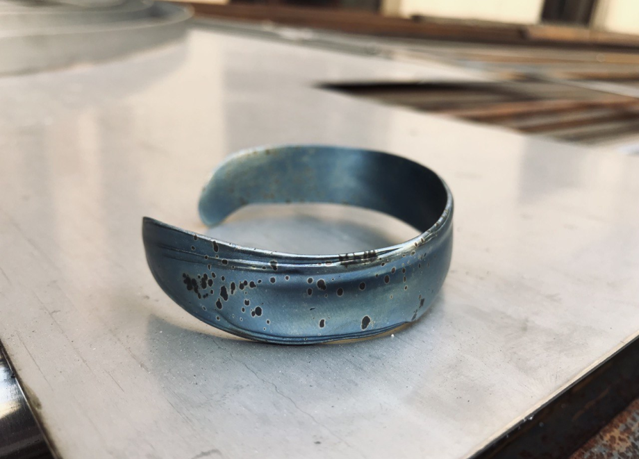
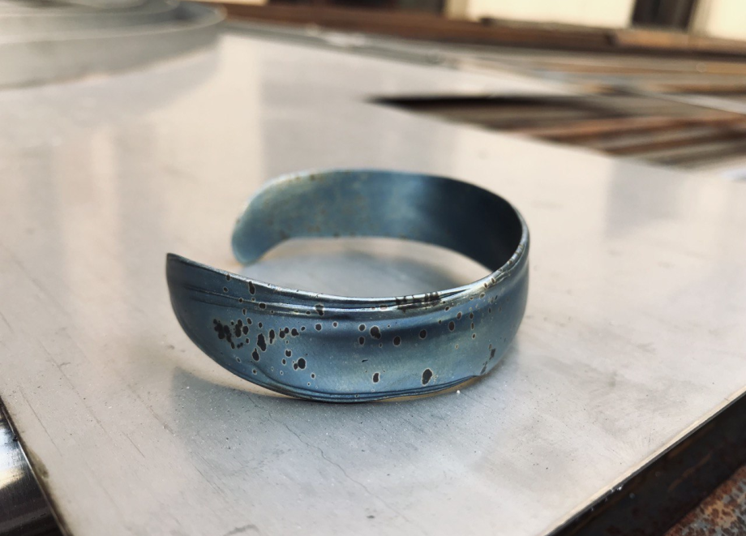

Bracelet
Aquarius
CoCr, heat tints, 2022
Aquarius
CoCr, heat tints, 2022
An open-ended man’s bracelet with heat tints came into being thanks to the order of an important person to me. For a long time I was sculpting to find the proper shape. Then I took my mind off things, pouring melted wax on a glass surface. I wondered what kind of ornament I could make this way. Fluidity of hot wax guided me. I followed my intuition, and on a sudden, I got the right result.
Photo: Max Nesterov, Irina Bogolyubova 
